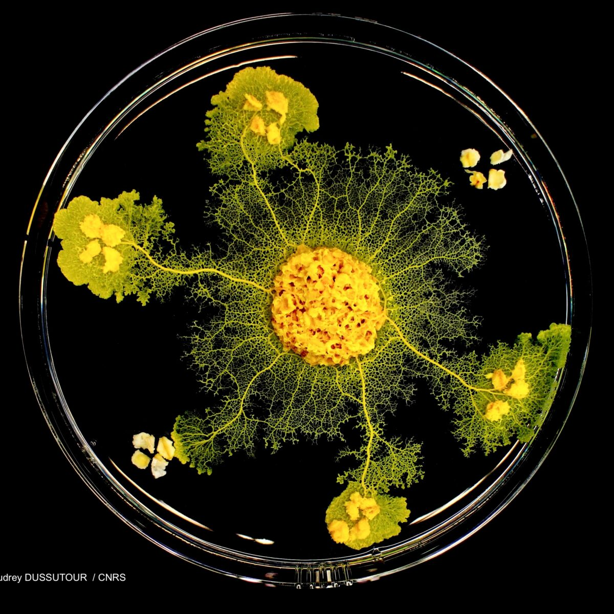

Un blob dans l'espace
Nourriture :
- Dans la nature : Des champignons et d'autres espèces de blob
- Dans les laboratoires : Des flocons d'avoine
Les Supers pouvoirs :
- Apprendre
- Se repérer
- Optimiser ses déplacements
- Transmettre des infos
- Double de volume tout les jours si il est bien nourrit
La recherche sur le blob en France :
Une chercheuse du nom de Audrey Dussutour, myrmecologe au CNRS s'occupe activement de cet étrange être de cyoplasme
Le Blob et l'espace :
Pour l'instant, nous ne savons pas beaucoup de choses au sujet du blob si ce n'est sa composition, de quoi il se nourrit ou encore quel est son prédateur. C'est pour cela que lors de le blob à été emmené dans l'espace par Thomas Pesquet à bord de l'ISS afin de découvrir comment il se comportait sans gravité.

Emma
A rajouter